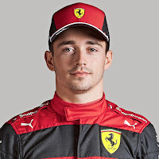

formule 1 coureurs


Charles Marc Hervé Perceval Leclerc
(Monte Carlo, 16 oktober 1997) is een Monegaskisch autocoureur. In 2018 maakt hij zijn Formule 1-debuut bij het team van Sauber. Vanaf 2019 rijdt Leclerc voor Ferrari. In 2016 werd hij lid van de Ferrari Driver Academy, het opleidingsprogramma van het Formule 1-team Ferrari. In 2016 werd hij kampioen in de GP3 Series, het daaropvolgende jaar in de Formule 2. Zijn broer Arthur Leclerc is eveneens autocoureur.